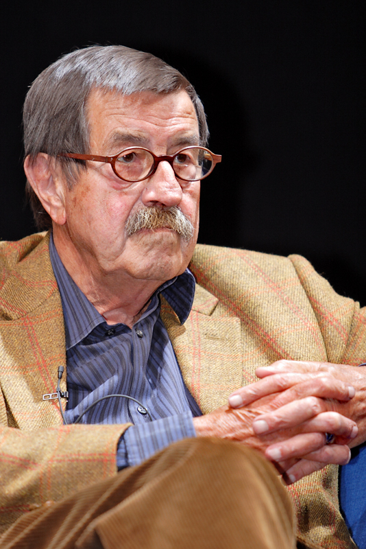

Günter Wilhelm Grass (1927 - 2015)
Guenter Grass [1927 - 2015 ] nhà văn được trao giải Nobel văn học 1999, giải cuối cùng của thế kỷ XX, tiêu biểu cho một thế hệ nhà văn Đức sau Đại chiến II dấn cuộc về chính trị, phấn đấu cho một nước Đức nhân đạo hơn và tiến bộ hơn. Ông đã mưu toan vẽ ra một số những bóng ma ám ảnh nước Đức thời Hitler trong tuyệt tác mà giải Nobel dựa vào đó, Chiếc trống thiếc – một thiên sử thi viết ra cách đây 40 năm về thời kỳ quốc xã và những năm đầu sau Đại chiến II.
Qua một hành trình dài trong sự nghiệp văn học, Grass đã xác lập ông như là một nhà văn lão thành của văn học Đức, đoạt nhiều giải thưởng trong đó có giải văn học hàng đầu của Đức Georg Buechner và giải Thomas Mann, và thường phát biểu ý kiến của mình về những vấn đề nóng hổi trong văn hóa cũng như chính trị. Bài xích truyền thống Đức muốn giữ một khoảng cách trí tuệ ôn hòa với thế cuộc, Grass bao giờ cũng cho trách nhiệm của nhà văn là lao vào cuộc tranh luận về đạo đức và chính trị.
Đối với nhiều người, ông là tiếng nói của một thế hệ người Đức đến tuổi lớn khôn trong cuộc chiến tranh phát xít và mang trên mình gánh nặng tội lỗi của cha ông. Xem ra quả là hoàn toàn phù hợp khi trong cuộc họp báo sau khi đoạt giải, ông đã nhấn mạnh đến lực lượng hạt nhân, trách nhiệm người Đức đối với lịch sử và vấn đề ngân sách nhà nước hơn là nói về nghề nghiệp văn chương. Là một người truyền bá kỳ cựu những lý tưởng phái tả, ông là một nhân vật khổng lồ của những nỗ lực của người Tây Đức trước đây nhằm mở rộng cửa cho bà con mình ở Đông Đức trong thời chiến tranh lạnh. Ông đã từng vật lộn với một số vấn đề cơ bản nhất trong thế kỷ này với ngòi bút của mình, từ tai họa quốc xã đến những hy vọng và hòa giải sau đó. Một trong những tác phẩm mới đây của ông có tên là Thế kỷ của tôi, một bình luận dài về 100 năm qua.
Ông đã chọn nghề điêu khắc trước khi cầm bút với tác phẩm đầu tay là một sưu tập thơ và đồ họa. Ông nổi tiếng trên thế giới với cuốn tiểu thuyết đầu tiên Chiếc trống thiếc được coi là một tuyệt tác, kể lại cuộc sống và những giai đoạn khốc liệt của một gia đình miền Đông Phổ dưới chế độ Hitler, được kể lại qua cặp mắt một đứa bé quyết tâm không chịu lớn khôn chỉ muốn mãi là một thằng nhóc con trong thế giới người lớn. Tiếp theo là cuốn Mèo và chuột (1961), Năm con chó (1963). Với tác phẩm Thuốc gây mê nội địa (1969) ông đề cập đến những chủ đề về tinh thần đầu tranh của tuổi trẻ với câu chuyện một thanh niên cách mạng trở thành một nhà cải cách đầy do dự. Tại một cuộc phỏng vấn năm 1969, Grass còn chống lại những kẻ tin vào những mục tiêu tuyệt đối, chống lại chủ nghĩa tiêu thụ và bạo lực trong giới trẻ ở Đức, chống lại việc triển khai các hệ thống tên lửa trên đất Đức và ủng hộ Đảng Xã hội dân chủ. Sau khi thống nhất nước Đức, ông tỏ ra thất vọng với nền chính trị Đức, quay lại chống tình trạng bài ngoại đang lên cao và mới đây nhất đi thăm miền Đông Đức và ủng hộ liên minh hai đảng Xã hội dân chủ và đảng Xanh.
Trong tuyên bố trao giải Nobel cho Guenter Grass vì toàn bộ sự nghiệp văn học của ông, Ban giám khảo nói rằng “những câu chuyện ngụ ngôn tối tăm mang chất bỡn cợt của ông đã miêu tả bộ mặt lịch sử bị lãng quên”, tiên đoán rằng Chiếc trống thiếc sẽ là một tác phẩm có sức sống bền dai của thế kỷ XX, và nhận xét rằng khi tác phẩm này được xuất bản “tình hình như thể văn học Đức đã được đem lại một sự khởi đầu mới sau nhiều thập kỷ của sự hủy diệt về ngôn ngữ và đạo đức”, giống như đồng nghiệp của ông, Henrich Boll, người Đức đoạt giải Nobel trước ông, năm 1972. Trong lời công bố trao giải, Ban giám khảo miêu tả Grass là một nhà ngụ ngôn và một giảng viên uyên bác, là bậc thầy về ngôn ngữ Đức khiến người ta nhớ lại Thomas Mann.
Trong tác phẩm lớn của ông về sau là Một miền xa xôi xuất bản năm 1995, ông chống lại việc thống nhất nước Đức một cách vội vã. Trong Thuốc mê nội địa, ông đề cập đến phong trào chống chiến tranh của Mỹ ở Việt Nam và sự hụt hẫng giữa các thế hệ. Ông từng làm người Mỹ nổi giận khi tấn công vào thứ chủ nghĩa tư bản không kềm chế trong chiến tranh lạnh và đi hàng đầu trong việc chống lại chạy đua vũ trang và chạy đua hạt nhân.
Mặc dầu Grass là một nhân vật có nhiều sự nhìn nhận trái ngược nhau ở nước mình – nguồn sức mạnh lẫn sự bực bội – đối với nhiều nhà văn lớn như Gabriel Garcia Marquez, Salman Rushdie, Nadine Gordimer và Kenzaburo Oe, ông là một nhà văn tiền bối đáng kính.
Nhà văn có đôi vai rộng và bộ ria quặp, con của một chủ cửa hàng ở Danzig này nhận tin được giải Nobel khi ông ở tại một hiệu chữa răng. Ông nói rằng “Tôi rất vui và tự hào, nhưng không chỉ cho riêng mình mà cả văn học Đức”. Trong cuộc phỏng vấn sau đó, ông cho hay sẽ dành một phần tiền thưởng làm quỹ từ thiện cho những người Gupsie lang thang, nhất là số phận những người Gupsie ở Kosovo.
Là nhà văn, đồng thời là một họa sĩ thành thạo đã tự trình bày và minh họa cho những cuốn sách của mình, Grass còn tuyên bố rằng ông sẽ không thay đổi nếp sống khi có khoản tiền triệu của giải thưởng. “Tôi sẽ cố sống cuộc sống càng bình thường càng tốt nhưng cũng có một số trò hay mà tôi sẽ không nói ra đâu”, nhà văn cười và nói thế.
Hiếm có nhà văn nào lại quan tâm đến những vấn đề chính trị của thế kỷ XX như nhà văn Đức Guenter Grass
* Xin nói về tác phẩm mới nhất của ông. Tên của nó có một chút gì đó mang tính sở hữu: Thế kỷ của tôi (Mein Jahrhundert). Chẳng lẽ thế kỷ XXI không còn là của ông nữa?
– Dĩ nhiên rồi. Tôi tò mò về thế kỷ mới bắt đầu này, nhưng tôi không thể nói rằng nó là thế kỷ của tôi.
* Nhưng sự nhìn lại thế kỷ vừa qua của ông có vẻ ảm đạm và bi quan.
– Thì nó đúng là một thế kỷ khủng khiếp chứ còn gì nữa. Nó được bắt đầu với một cuộc trừng phạt chống lại người Trung Quốc. Khi tôi viết chương đầu tiên của cuốn sách, bản thân tôi cũng ngạc nhiên là cuộc trừng phạt mở đầu thế kỷ XX này đã được tiến hành với một sự tàn bạo và ngạo mạn như thế nào.
* Ông được trao giải Nobel văn học còn vì những sáng tác thơ của ông, đều ít được nhắc tới nhưng rất đáng lưu ý.
– Tôi rất vui mừng vì các anh nhìn nhận như vậy, bởi lẽ thơ đối với tôi rất quan trọng và nó luôn là nguồn tạo cảm hứng cho những tác phẩm tiếp theo của tôi. Chúng vẫn được khởi đầu từ những bài thơ.
* Tức là những tác phẩm văn xuôi của ông nảy mầm từ những bài thơ?
– Vâng, đôi khi là như vậy.
* Nhưng thơ đòi hỏi một cách xử lý ngôn ngữ hoàn toàn khác?
– Sau những giai đoạn viết văn xuôi, có khi kéo dài hàng năm, tôi thực sự thèm khát được thể hiện một cách ngắn gọn và cô đọng, vì thế tôi dùng đến một công cụ tinh vi hơn, đó chính là thơ.
* Có độc giả cho rằng thơ cần phải được giải mã một cách chính xác và phải nói lên được một “thông điệp”. Ông, một nhà văn làm thơ, suy nghĩ gì về điều đó?
– Thật ra thì tôi chỉ thỉnh thoảng làm thơ. Tôi cũng không nghĩ rằng thơ phải tối nghĩa hay cần được làm tối nghĩa - mặc dầu đôi khi người ta cần phải tạo ra bóng tối để có thể chứng tỏ được sự bừng sáng của nó. Nhưng tôi cho rằng câu hỏi “Nhà thơ này muốn nói cái quái gì nhỉ?” mà các nhà nghiên cứu văn học Đức vẫn đặt ra có lẽ thể hiện một thái độ thù địch với nghệ thuật nhiều hơn. Một tác phẩm nghệ thuật - bất kể đó là bản sonate, một bức tranh hay một bài thơ - tồn tại bởi tín ngưỡng đa nghĩa của chúng, bởi những nội dung mà người ta luôn có thể khám phá ở chúng.
* Giải Nobel đã làm thay đổi hẳn cuộc đời của ông?
– Ồ không. Cũng có một số thay đổi nho nhỏ, chẳng hạn tôi được nhiều người bắt chuyện hơn, đó là những người hiểu từ Nobel theo nghĩa là “quý phái” (trong tiếng Đức cũng là “nobel”) và vì thế họ dành cho tôi một sự săn đón và rất nhiều những lời đề nghị đỡ đầu cho một tổ chức hay hoạt động nào đó. Ở đây anh phải tập làm quen với nghệ thuật từ chối.
* Nhưng giải thưởng đó trước hết đã mang đến cho ông một sự hài lòng?
– Vâng, chắc chắn rồi, đó là một niềm vui lớn. Nhưng nó sẽ tuyệt vời hơn nếu như tôi nhận được giải thưởng này sớm hơn, vào năm 35 hay 40 tuổi chẳng hạn, vì khi ấy sự khát khao của tôi đối với nó lớn hơn (Grass viết tiểu thuyết Chiếc trống thiếc, tác phẩm quan trọng nhất trong sự nghiệp văn học của ông, ngay từ những năm 50 và ông thường xuyên được đưa vào danh sách đề cử giải trao giải Nobel từ hàng chục năm nay - N.P).
* Nhân tiện ông nói về tuổi trẻ: Phải chăng giải Nobel là một sự thừa nhận đối với quan điểm của ông về việc nhà văn cần phải có bổn phận chính trị? Phải chăng đối với ông, những nhà văn trẻ ở Đức hiện nay, trong đó có nhiều người chống lại quan điểm ấy, là một thế hệ bỏ đi?
– Tôi không muốn nói một cách quá đáng như vậy. Ở Đông Đức có một số nhà văn trẻ đã hiểu ra rằng, các nhà văn còn là những công dân của một đất nước. Đó luôn là cơ sở cho quan điểm của tôi. Cuốn sách đầu tiên in những bài nói chuyện về đề tài chính trị của tôi mang tựa đề Về một điều hiển nhiên và nó được viết dựa trên những kinh nghiệm mà thế hệ chúng tôi đã trải qua ở thời Cộng hòa Weimar. Nền cộng hòa ấy đi tới chỗ suy vong (được thay thế bởi chế độ Quốc xã của Hitler – N.P) chẳng qua là vì khi ấy có quá ít công dân dấn thân vì nó, kể cả các nhà văn.
* Trong khi ấy, điều dễ nhận thấy là nhiều nhà văn trẻ hiện nay ở Đức không có một định hướng chính trị. Ông có thể trò chuyện được với những người viết văn của thời đại Pop hay không?
– Tôi nghĩ thật là sai lầm khi đánh đồng tất cả những nhà văn trẻ. Khái niệm “trẻ” cũng rất tương đối. Mới đây tôi có đọc cuốn tiểu thuyết Vorleser của Bernhard Schlink, một tác giả có khả năng soi rọi những vấn đề quá khứ bằng một cách dẫn giải mới. Một số tác giả Đông Đức như Thomas Brussig, Ingo Schulze hay Ingo Schramm cũng tìm cách nói lên tiếng nói của mình. Thế nhưng cũng có những tác giả trẻ, trong đó cũng có những người có tài, lại hoàn toàn quay lưng với chính trị. Họ muốn chứng tỏ bản thân chỉ qua những thử nghiệm về cách viết. Nhưng tác phẩm của họ nhìn chung nông cạn. Nó không đủ chất liệu, không đủ nội dung để buộc họ phải tìm ra một hình thức viết cần thiết.
* Quả là thế hệ các nhà văn hiện nay đã phát triển những giá trị khác, những phong cách sống và phong cách viết khác. Dường như chủ nghĩa vị kỷ ở những năm 70, những trò chơi chữ hậu hiện đại ở thập kỷ 80 hay trước đó là việc xử lý quá khứ mà thế hệ của ông theo đuổi, đã trở nên lỗi thời. Ông có cho rằng đó là một nguy cơ đối với văn học hay không?
– Có. Các tác phẩm của họ được viết có phần khá tốt, nhưng thời gian sống của chúng rất ngắn. Chúng được xây dựng không xuất phát từ sự phản kháng hay từ những nổi đau mất mát, điều mà theo tôi có một ý nghĩa rất quan trọng đối với những nhà văn thuộc thế hệ chúng tôi, kể cả các nhà văn Đức, lẫn các nhà văn nước ngoài. Cách đây vài năm, tôi có nói chuyện với nhà văn Anh gốc Ấn Salman Rushdie ở London và hai chúng tôi đi tới kết luận: Chính sự mất mát quê hương – trong trường hợp tôi là Gdansk (trước đây vốn thuộc Đức, sau Chiến tranh thế giới thứ hai thuộc về Ba Lan - N.P) và trong trường hợp Rushdie là Bombay - đã dẫn chúng tôi tới một điều ám ảnh: Đó là sự khao khát hướng tới một cái đã hoàn toàn bị mất đi. Tôi nghĩ, sự ám ảnh ấy, điều cũng có thể hình thành từ những nỗi đau mất mát khác, là một cơ sở của sáng tác văn học. Còn cái kiểu “ung dung ngồi viết” sẽ nhanh chóng cạn nguồn cảm xúc.
* Khi đến Stockholm nhận giải Nobel văn học, trong số những đứa cháu nội, ngoại của ông, ông chỉ cho những đứa am hiểu các tác phẩm của ông cùng đi. Liệu văn hóa đọc có tương lai hay không trong một thế kỷ của những trò chơi điện tử và Internet?
– Tôi thậm chí nghĩ rằng, đến một lúc nào đó sẽ có xu hướng người ta quay lưng lại với những phương tiện truyền thông đang thống trị. Thế hệ trẻ ngày nay dành thời gian cho truyền hình dè xẻn hơn là những người cao tuổi. Đối với họ, truyền hình cũng chỉ là một trong nhiều hình thức giải trí mới được phát triển mà họ có thể lựa chọn. Vì văn hóa đọc là một điều không có sự thay thế trong một thế giới đầy rẫy những hình thức giải trí có thể thay thế này, nên tôi tin rằng văn học sẽ sống sót. Đúng là văn học được hình thành để phục vụ chỉ cho một thiểu số trong xã hội, nhưng tôi nghĩ, thiểu số ấy sẽ lại ngày càng đông.
NGÔ PHAN